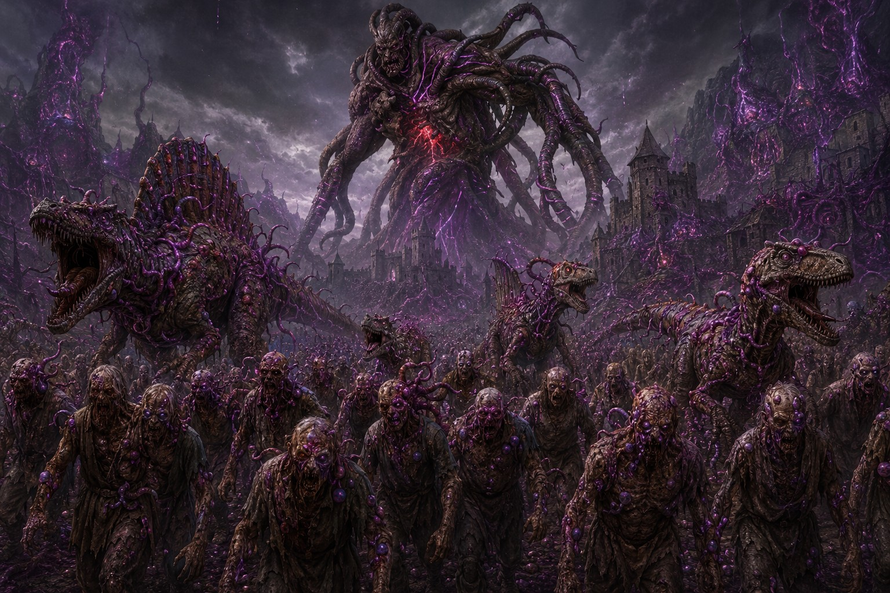
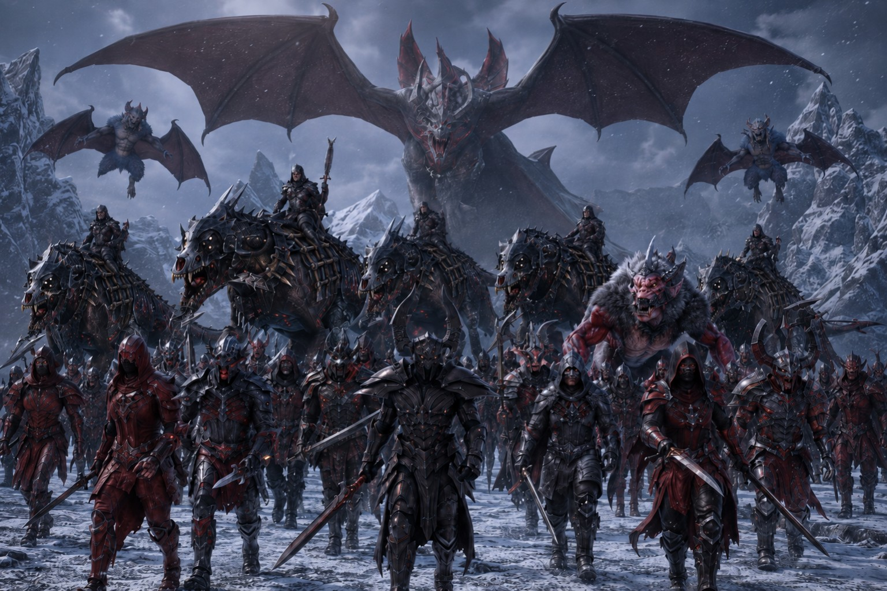
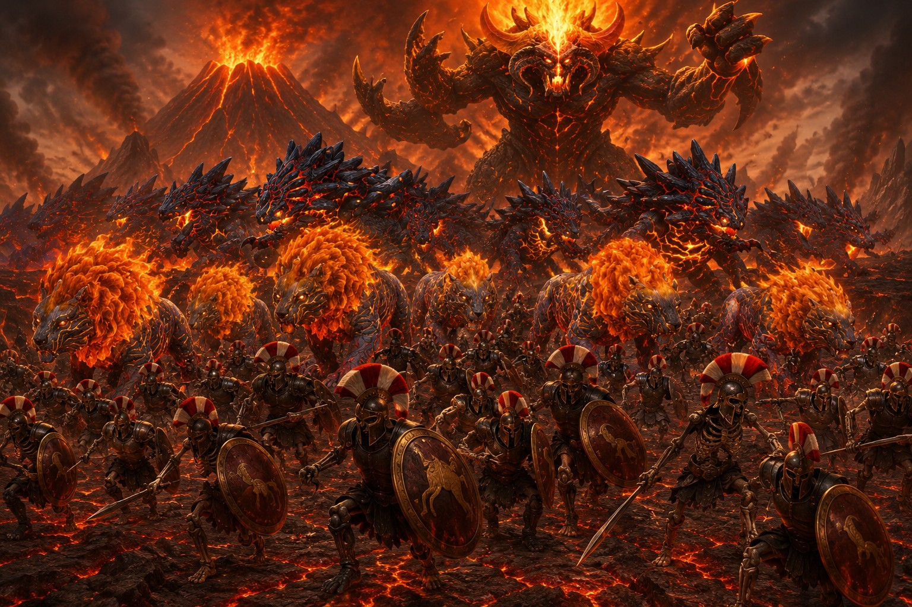
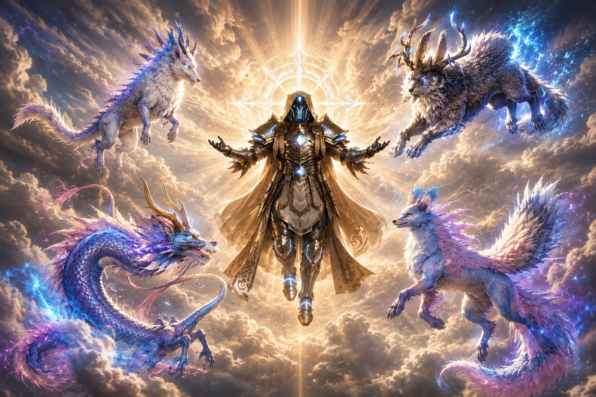

Acteurs du monde · PNJ et animateurs
Les
Factions
Des guides immortels aux armées qui sommeillent sous terre, ces puissances indépendantes donnent vie aux quêtes, aux conflits et aux grands événements du serveur.
factions documentéesAlliées · neutres · opportunistes · hostiles
Bien plus que des ennemis à combattre
Ces factions ne sont pas des royaumes jouables. Elles sont incarnées par les PNJ et les animateurs pour porter des rencontres, des missions, des intrigues et des menaces. Leur attitude peut évoluer selon les choix des joueurs et le déroulement des saisons.
Quatre familles
Comprendre les forces en présence
Chaque groupe poursuit ses propres objectifs. Certains guident les survivants, d’autres défendent leur indépendance ou préparent une guerre oubliée.
Protecteurs et observateurs
Des guides anciens qui veillent sur l’humanité, les dragons ou l’équilibre du monde.
Explorer ↓023 factionsPeuples et héritages
Des communautés héritières d’un passé ancien, libres, dispersées ou prêtes à s’unir.
Explorer ↓032 factionsForces organisées
Des armées et confréries indépendantes dont les contrats, intérêts et ambitions façonnent le présent.
Explorer ↓046 factionsMenaces anciennes
Des empires morts, cultes, fléaux et puissances capables de bouleverser les royaumes.
Explorer ↓01 · BienveillanteLes Gardiens ÉternelsGuides immortels 02 · NeutreLe Dernier RoyaumeCivilisation survivante
02 · NeutreLe Dernier RoyaumeCivilisation survivante 03 · Méfiance hostileLes DissidentsVillages autonomes04 · HostileL’Empire DéchuArmée morte-vivante
03 · Méfiance hostileLes DissidentsVillages autonomes04 · HostileL’Empire DéchuArmée morte-vivante 05 · HostileLes CorrompusCréatures altérées
05 · HostileLes CorrompusCréatures altérées 06 · OpportunisteLa Compagnie de FerCompagnie mercenaire
06 · OpportunisteLa Compagnie de FerCompagnie mercenaire 07 · BelliqueuseLa Grande MeuteConfédération tribale
07 · BelliqueuseLa Grande MeuteConfédération tribale 08 · PrédatriceLa Nuée des ProfondeursConscience collective
08 · PrédatriceLa Nuée des ProfondeursConscience collective
09 · ExterminatriceLe Fléau des AbîmesHorde infectée
10 · InfiltréeLe Cercle ÉcarlateCulte vampirique
11 · ExterminatriceLa Légion CalcinéeArmée infernale
12 · Protectrice et neutreLes Veilleurs CélestesOrdre céleste13 · ProtectriceL’Ordre DraconiqueOrdre de Dragonniers14 · OpportunisteLes Flibustiers de l’ÉcumeConfrérie pirateDossiers complets
Origines, ambitions et menaces
Ouvrez une archive pour découvrir l’histoire de la faction, son organisation, son territoire et la place qu’elle occupe dans le monde.
Protecteurs et observateurs
Des guides anciens qui veillent sur l’humanité, les dragons ou l’équilibre du monde.
Protecteurs et observateurs · Guides immortelsLes Gardiens ÉternelsTrois frères au seuil d’un nouvel âgeBienveillanteActifs
Skull, Raven et Dread Craux ont observé des civilisations entières naître et disparaître. L’arrivée des survivants du Cataclysme les a finalement convaincus de sortir de l’ombre.
L’origine
Avant la naissance des premiers royaumes, trois frères parcouraient déjà le monde. Nul ne connaissait leur véritable origine : certains les disaient nés avec la création, d’autres héritiers d’une civilisation plus ancienne que l’Histoire.
Durant des millénaires, Skull, Raven et Dread Craux virent des peuples devenir des empires, puis des ruines. Ils refusèrent pourtant de diriger les hommes. Ils observaient, voyageaient et disparaissaient dès que leur présence attirait trop d’attention, jusqu’à ne plus être que des mythes racontés au coin du feu.
Le Cataclysme
Puis un monde lointain fut détruit. Des continents furent engloutis, des millions d’êtres périrent et quelques rescapés furent transportés à travers les dimensions jusqu’aux plages de ce continent.
Pour la première fois depuis des millénaires, les trois frères décidèrent d’intervenir. Ils ressentirent dans cette arrivée un appel du destin qu’aucun d’eux ne pouvait expliquer.
Les trois frères
Skull Craux est le Gardien Guerrier, chevalier errant et protecteur des faibles. Aucun monstre ni tyran ne l’empêche de répondre au danger ; il incarne la force, l’honneur et le courage.
Raven Craux est le Gardien Chasseur. Marchand, explorateur, voleur et aventurier, il connaît les routes, les océans et les secrets du continent mieux que quiconque. Grâce à lui, de nombreux savoirs oubliés ont été retrouvés.
Dread Craux est le Gardien Mage. Sa maîtrise de la magie et les connaissances accumulées au fil des âges font de lui un conseiller recherché par les dirigeants et les érudits.
Le retour des Gardiens
Les frères ne veulent devenir ni rois ni maîtres. Ils ont choisi de guider les survivants afin qu’ils reconstruisent un avenir meilleur que le monde qu’ils ont perdu.
Après des millénaires passés à veiller depuis l’ombre, leur rôle a changé : le temps est venu d’agir et de reprendre leur place dans l’Histoire.
Observer ne suffit plus. Le temps est venu d’aider les survivants à rebâtir.
Protecteurs et observateurs · Ordre célesteLes Veilleurs CélestesObserver, protéger et attendreProtectrice et neutreEn observation
Créés par un Dieu Ancien, ces êtres ailés protègent l’existence de l’humanité sans jamais gouverner ses choix. Ils n’interviennent que lorsque l’extinction menace.
L’origine
Durant un âge antique, un Dieu Ancien observa les jeunes peuples humains et vit à la fois leur potentiel et leur fragilité. Il créa des êtres aux ailes angéliques et à la longévité presque infinie.
Leur mission était précise : protéger l’humanité sans lui retirer sa liberté. Ils ne devaient ni gouverner ni régner, seulement veiller.
Les premiers guides
Les Veilleurs enseignèrent aux tribus à cultiver, bâtir des refuges et transmettre le savoir. Leurs rares apparitions devinrent des récits de voyageurs sauvés, de villages guéris et d’étrangers vêtus de blanc.
Les gardiens de l’équilibre
Lorsque les hommes furent capables de tracer leur propre chemin, les Veilleurs se retirèrent. Guerres, tyrannies et chutes de royaumes appartiennent au destin des mortels et ne justifient pas leur intervention.
Ils sortent pourtant de l’ombre face aux menaces d’extinction : failles infernales, créatures venues des étoiles ou entités capables de détruire toute vie.
L’épreuve du Cataclysme
Ils ressentirent la destruction de l’autre monde et observèrent l’arrivée des survivants. Le danger immédiat était passé ; il s’agissait désormais de l’avenir de l’humanité.
Aujourd’hui, leurs forteresses demeurent cachées. Certains Veilleurs se demandent cependant si l’âge de la seule observation ne touche pas à sa fin.
Observer. Protéger. Attendre.
Protecteurs et observateurs · Ordre de DragonniersL’Ordre DraconiqueLe serment des derniers dragonsProtectricePresque disparu
L’Ordre protège les derniers dragons et l’équilibre qui les lie au monde. Une seule lignée perpétue encore ouvertement ce serment : la Maison Dorstan.
L’origine
Bien avant l’arrivée des survivants, les derniers dragons vivaient cachés dans les montagnes, les forêts anciennes et les sanctuaires oubliés. Leurs protecteurs fondèrent l’Ordre Draconique afin de préserver leur existence et leur héritage.
L’Ordre ne cherchait ni à régner ni à imposer sa puissance. Il maintenait l’équilibre entre les peuples et les dragons.
L’héritage des Dorstan
La Maison Dorstan devint la plus grande lignée de gardiens et les premiers Dragonniers capables de combattre aux côtés des dragons. Leur puissance attira toutefois la peur et la convoitise.
Les sanctuaires furent attaqués, les Dragonniers traqués et de nombreux dragons capturés ou massacrés. L’Ordre tomba peu à peu dans l’oubli.
L’arrivée des survivants
Le Cataclysme bouleversa l’équilibre. Les nouveaux arrivants réveillèrent d’anciens sanctuaires, découvrirent des vestiges et ravivèrent des forces endormies. Des dragons furent de nouveau aperçus dans les cieux.
Le dernier Dragonnier
Aeron Dorstan, élevé en secret, reçut les derniers enseignements de ses ancêtres. Dans un sanctuaire oublié, il découvrit un œuf préservé depuis des générations.
Le dragon qui en naquit fut nommé Dofro. Pour Aeron, il n’est ni une arme ni une monture, mais sa famille et son propre fils. Tant qu’ils vivront, l’Ordre Draconique ne disparaîtra jamais entièrement.
Un dragon n’est pas une arme de guerre. Il est un membre de la famille.
Peuples et héritages
Des communautés héritières d’un passé ancien, libres, dispersées ou prêtes à s’unir.
Peuples et héritages · Civilisation survivanteLe Dernier RoyaumeLes héritiers d’une unité disparueNeutreDispersé
Une nation millénaire domina jadis le continent avant de s’effondrer sans explication. Ses descendants préservent aujourd’hui sa mémoire dans six communautés indépendantes.
L’origine
Plusieurs siècles avant le Cataclysme, une nation dominait le continent : le Dernier Royaume. Son histoire s’étendait sur des millénaires et son influence atteignait les côtes les plus lointaines comme les montagnes les plus reculées.
Les chroniques décrivent un âge de stabilité : routes sûres, échanges florissants et cités attirant marchands, érudits et voyageurs de toutes les terres.
Une disparition inexpliquée
Sans grande guerre connue ni catastrophe clairement identifiée, le royaume s’effondra. Les archives se contredisent : maladie des élites, magie ancienne devenue incontrôlable ou conflits internes soigneusement dissimulés.
Les villes furent abandonnées, les forteresses désertées et les institutions disparurent en quelques générations. Pourtant, routes, ponts et ruines monumentales témoignent encore de sa grandeur.
Les descendants
Une partie de la population survécut et fonda six villages principaux. Chacun est dirigé par un Gouverneur et ne répond à aucune autorité supérieure. Les communautés coopèrent parfois, mais leurs cultures et leurs rivalités ont évolué séparément.
D’autres familles vivent près des anciennes routes dans des demeures isolées. Elles accueillent les voyageurs, commercent et conservent parfois des cartes, des objets ou des récits remontant à l’ancien royaume.
Les Gardiens de la Mémoire
Bardes, chroniqueurs et anciens transmettent les exploits des rois d’autrefois, les batailles et les merveilles architecturales disparues. Pour eux, le souvenir est une richesse aussi précieuse que l’or.
La plupart savent que le royaume ne renaîtra probablement jamais sous sa forme originelle. Beaucoup rêvent pourtant de revoir un jour ses héritiers réunis sous les bannières de leurs ancêtres.
Ils ne sont pas les ruines d’un royaume : ils sont la mémoire qui refuse de mourir.
Peuples et héritages · Villages autonomesLes DissidentsNi couronne, ni dogme, ni maîtreMéfiance hostileFragmentés
Nés après le Cataclysme, les Dissidents ont rejeté les anciennes couronnes et les religions dominantes pour construire des communautés libres au cœur des terres sauvages.
L’origine
Alors que les royaumes tentaient de reconstruire le passé, de nombreux survivants jugèrent les anciennes croyances et les anciennes couronnes responsables de la chute du monde. Ils quittèrent les territoires contrôlés et fondèrent leurs propres communautés.
La faction ne constitue pas un royaume unique, mais une multitude de villages partageant une même volonté : forger leur avenir sans roi ni religion dominante.
Une alliance autonome
Les Dissidents ne possèdent ni capitale ni chef suprême. Conseils d’anciens, chefs élus ou familles fondatrices gouvernent chaque village selon des lois et des coutumes propres.
La vie y est rude. Les communautés côtières vivent de pêche et de commerce maritime, celles des forêts de chasse et de cueillette, tandis que les villages montagnards exploitent d’anciennes mines.
Les maîtres de la faune sauvage
Là où les royaumes voient d’abord les créatures comme des menaces, les Dissidents les considèrent comme des alliées. Bêtes de somme, montures et créatures de défense donnent à chaque communauté des moyens très différents de survivre.
Relations hostiles
Leur opposition aux royaumes et aux institutions religieuses provoque raids, escarmouches et conflits de frontière. Les étrangers sont souvent arrêtés, expulsés ou attaqués avant même de pouvoir expliquer leurs intentions.
Tous ne sont cependant pas belliqueux. Des fermes et cabanes isolées commercent parfois avec les voyageurs, tandis que certains Dissidents servent comme éclaireurs, pisteurs, chasseurs ou dresseurs.
Pour les royaumes, ils sont une menace. Pour eux-mêmes, ils sont la preuve qu’un peuple peut rester libre.
Peuples et héritages · Confédération tribaleLa Grande MeuteLa horde qui renaît après chaque défaiteBelliqueuseDivisée
Orques, Gobelins et Trolls partagent une origine et des traditions anciennes. Leurs querelles protègent aujourd’hui les royaumes d’une force qui faillit autrefois submerger le monde.
Une horde plus vieille que les empires
La Grande Meute existe depuis plusieurs millénaires. Elle a survécu aux campagnes d’extermination, aux défaites et à la chute d’innombrables empires. Une tribu disparaît, d’autres demeurent dans les régions reculées.
Les trois peuples
Les Orques forment le cœur des armées : grands, robustes et guidés par le prestige du combat. Les Gobelins compensent leur taille par l’ingéniosité ; ils servent d’éclaireurs, d’artisans, de dresseurs et d’inventeurs. Les Trolls constituent la force brute capable de briser portes et formations.
L’âge de l’unification
Un chef dont le nom fut perdu réussit autrefois à réunir des milliers de tribus. La Meute rasa des cités et força des nations entières à reculer jusqu’à ce qu’une Grande Alliance des Nations abatte son dirigeant après des décennies de guerre.
Sa mort réveilla les anciennes rivalités et fragmenta l’empire de la Meute.
La prophétie de la Meute
Les tribus se disputent encore territoires, ressources et prestige. Elles s’unissent parfois pour une invasion, jamais très longtemps.
Les chroniqueurs avertissent toutefois qu’aucune armée actuelle ne pourrait affronter seule une Meute réunifiée. Elle attend peut-être seulement l’apparition d’un chef capable de rassembler ses enfants.
Les tribus se battent entre elles, et le monde survit. Qu’elles s’unissent, et les royaumes apprendront la peur.
Forces organisées
Des armées et confréries indépendantes dont les contrats, intérêts et ambitions façonnent le présent.
Forces organisées · Compagnie mercenaireLa Compagnie de FerUne armée sans royaumeOpportunisteFragmentée
Chevaliers, mercenaires, soldats et bandits ont uni discipline et brutalité pour former une armée qui ne sert aucune couronne. Sa loyauté dure exactement autant que le paiement.
L’origine
Après le Cataclysme, chevaliers sans seigneurs, mercenaires sans employeurs, soldats isolés et brigands luttèrent d’abord chacun pour soi. Les plus forts comprirent qu’ils survivraient mieux ensemble.
Les anciens chevaliers apportèrent leur discipline et leur organisation ; les bandes, leur férocité et leur expérience des terres sauvages. De cette alliance naquit la Compagnie de Fer.
Une armée sans royaume
La Compagnie protège des cités, escorte des caravanes, mène des guerres ou renverse des seigneurs contre de l’or. Lorsque les coffres se vident, elle peut devenir une armée de pillards aussi vite qu’elle était devenue une alliée.
Les corps de Fer
Ses fantassins manient de lourdes armes à deux mains ou forment des murs de grands boucliers. Ses archers sont réputés pour leur précision et sa cavalerie lourde, issue des traditions chevaleresques, demeure son élite la plus redoutée.
Les Seigneurs de Guerre
À sa création, la Compagnie se divisa en groupes de guerre autonomes. Chaque chef conclut ses contrats et mène ses campagnes. Leurs intérêts divergent, mais tous portent les mêmes couleurs.
Cette fragmentation rassure les royaumes. Si un commandant réunissait un jour toutes les bannières, la compagnie pourrait devenir une nation de guerriers et un empire en marche.
La Compagnie ne sert aucun roi. Elle sert l’or, la victoire et sa propre survie.
Forces organisées · Confrérie pirateLes Flibustiers de l’ÉcumeUn capitaine commande un navire, jamais la merOpportunisteEn expansion
Des marins de nations ennemies ont perdu leur monde et trouvé une nouvelle patrie : la mer. Libres, solidaires et dangereux, ils refusent qu’un roi commande à l’Écume.
L’origine
Parmi les survivants du Cataclysme se trouvaient marins, soldats, navigateurs, charpentiers et corsaires. Leurs anciens royaumes disparus, ils unirent leurs connaissances pour bâtir des abris, des embarcations et explorer les côtes.
Plusieurs capitaines réunirent les équipages : chacun resterait maître de son navire, mais tous s’entraideraient. Ils ne serviraient plus aucun roi.
La naissance de l’Écume
Les anciens pavillons furent remplacés par l’Écume, symbole de liberté, de mouvement et d’une vie impossible à enchaîner. Une règle fondamentale lia la confrérie : « L’Écume protège toujours les siens. »
Des prises aux bastions
Les premiers pillages furent commis par nécessité contre les routes commerciales du nouveau monde. Puis les méthodes corsaires revinrent : poursuites, tirs sur les voiles, abordages et cargaisons capturées.
Criques, archipels et îles protégées par les récifs devinrent les Bastions de l’Écume, des ports pirates où réparer, commercer, stocker et préparer des raids plus ambitieux.
L’Assemblée des Capitaines
Pour éviter que les rivalités ne déchirent la faction, les capitaines créèrent un conseil. Chacun demeure maître de son équipage, mais les expéditions, les ennemis communs et l’aide de la flotte sont discutés collectivement.
Aucun capitaine ne peut devenir roi. La flotte grandit pourtant, et son pavillon suffit déjà à provoquer la peur dans les ports. Le Cataclysme a détruit leurs patries ; il leur en a offert une nouvelle : la mer.
L’Écume protège toujours les siens.
Menaces anciennes
Des empires morts, cultes, fléaux et puissances capables de bouleverser les royaumes.
Menaces anciennes · Armée morte-vivanteL’Empire DéchuLes légions que la mort n’a pas libéréesHostileEn éveil
Bien avant le Dernier Royaume, un empire unifia tout le continent. Un pacte interdit le détruisit de l’intérieur et ses légions semblent aujourd’hui reprendre leurs anciennes marches.
L’âge d’or impérial
L’Empire Déchu régna autrefois d’un horizon à l’autre. Ses cités étaient immenses, ses routes entretenues et ses légions composées de soldats professionnels dont la discipline était légendaire.
Sa véritable force résidait dans la maîtrise des créatures sauvages. Les Wyvernes impériales servaient de montures aux officiers et leur seule présence pouvait briser le moral d’une armée.
Le pacte interdit
Cherchant un pouvoir dépassant les mortels, les empereurs conclurent un accord avec une divinité obscure dont le nom fut effacé des archives. Pouvoir, richesse et savoir leur furent peut-être promis ; une malédiction fut leur véritable héritage.
Nobles, gouverneurs et troupes sombrèrent dans la paranoïa et les guerres internes. Des ombres envahirent les rues, des créatures mutèrent et les morts refusèrent leurs tombes. L’empire disparut sans avoir été vaincu par une nation étrangère.
Le retour de l’armée des morts
Des soldats squelettiques émergent désormais des tombeaux, toujours organisés comme s’ils obéissaient à des ordres millénaires. Des créatures osseuses et de rares Wyvernes mortes-vivantes ont aussi été aperçues près des ruines.
Une prophétie affirme que ces groupes ne sont que les éclaireurs d’une armée immense attendant sous le continent. La plupart des dirigeants minimisent encore la menace.
L’Empire Déchu n’a peut-être jamais disparu. Il attendait simplement de recevoir un nouvel ordre.
Menaces anciennes · Créatures altéréesLes CorrompusLa volonté du Roi des TitansHostileEn expansion
Le Roi des Titans transforme les êtres vivants en serviteurs privés de volonté. Une seule limite résiste encore à son pouvoir : l’humanité demeure inexplicablement immunisée.
L’origine
Les Corrompus apparurent avant et surtout durant le Cataclysme, lorsqu’une puissance oubliée se réveilla dans les profondeurs. Elle appartenait au Roi des Titans, divinité antique longtemps réduite au rang de légende.
Le pouvoir de Corruption
Cette énergie sombre altère le corps et l’esprit. Les créatures touchées perdent leur identité et leur libre arbitre, tandis que leur chair, leurs yeux et leurs instincts se transforment. Plus l’hôte est puissant, plus la mutation est spectaculaire.
Animaux sauvages, créatures magiques et monstres anciens rejoignent ainsi une armée entièrement dévouée au Roi des Titans.
Le mystère de l’humanité
Aucun humain n’a jamais été corrompu, même après une exposition prolongée. Bénédiction inconnue, héritage des anciens dieux, singularité de l’âme humaine ou faiblesse du Roi des Titans : aucune théorie n’a été prouvée.
La menace actuelle
Les Corrompus cherchent à préparer le retour de leur souverain, détruire les royaumes, étendre les zones contaminées, retrouver ses reliques et percer le secret de l’immunité humaine.
Si cette dernière barrière venait à tomber, plus rien ne garantirait la survie de la civilisation.
Tant que l’humanité résiste, le règne du Roi des Titans reste incomplet.
Menaces anciennes · Conscience collectiveLa Nuée des ProfondeursL’empire sous le mondePrédatriceEn observation
Sous les continents s’étend une civilisation insectoïde aussi ancienne que le monde. Ses Maîtres observent patiemment la surface à travers une conscience partagée.
L’origine
Avant les royaumes et les premières civilisations, une présence sommeillait déjà sous la croûte du monde. Depuis des millions d’années, la Nuée grandit dans un réseau de cavernes, de galeries et de ruches enfouies.
Les Maîtres des Nuées
Ces créatures colossales portent une carapace noire semblable à de l’obsidienne vivante. Certaines atteindraient plusieurs centaines de mètres et traverseraient les montagnes en creusant la roche.
Elles commandent sans parole par une conscience collective. Chaque membre de la Nuée ressent leur volonté comme un instinct irrésistible.
Les espèces de la Nuée
Les Fouisseurs de l’Abîme creusent et entretiennent les tunnels. Les Ravageurs sont des troupes de choc quadrupèdes. Les Gredins des Profondeurs servent de gardes et d’embusqués intelligents. Les Ailes-Couveuses explorent les cavernes et rapportent nourriture, biomasse et informations.
La menace qui sommeille
Océans souterrains, forêts de champignons et cités organiques forment un écosystème indépendant du soleil. Les incursions à la surface restent rares : disparitions, grondements, effondrements et tunnels colossaux.
Une prophétie annonce qu’un jour les galeries s’ouvriront simultanément sous les villes. La guerre ne viendra alors pas de l’horizon, mais d’en dessous.
Quand la terre s’ouvrira, la surface découvrira qu’elle n’a jamais été seule.
Menaces anciennes · Horde infectéeLe Fléau des AbîmesL’infection qui apprend de ses défaitesExterminatricePrésumé dormant
Un mage voulut perfectionner la Corruption du Roi des Titans. Il créa une maladie capable d’atteindre toute forme de vie et devint lui-même le Prophète de l’Abîme.
La naissance du Fléau
Fasciné par la Corruption, un mage passa des décennies dans des laboratoires souterrains afin de créer une arme vivante capable de contaminer même les humains. Lorsqu’il s’injecta sa propre substance, son corps se brisa, grandit et se couvrit de tentacules.
Son esprit fut consumé par une seule obsession : répandre son œuvre. Les survivants le nommèrent le Prophète de l’Abîme.
Les Enfants du Fléau
Humains, animaux, monstres, créatures marines et même plantes peuvent être contaminés. Leurs corps mutent, leur esprit s’efface et chaque victime devient un nouveau soldat. Certaines conservent leurs capacités ; d’autres deviennent des abominations gigantesques.
Villages, villes puis royaumes entiers tombèrent. Aucune muraille ne pouvait arrêter une armée dont chaque bataille augmentait les rangs.
La Guerre de la Dernière Aube
Les derniers mages et alchimistes unirent leurs savoirs et créèrent un antidote, peut-être grâce à une aide divine. Les nations libres formèrent une coalition et la nature elle-même sembla rejoindre le combat : animaux sauvages et créatures légendaires attaquèrent les infectés.
Après des mois de guerre, les dernières armées furent détruites et les terres purifiées.
Le mystère du Mage Fou
Le corps du Prophète ne fut jamais retrouvé. Des explorateurs parlent encore de murmures et de mutations inconnues dans les régions reculées.
S’il poursuit réellement ses expériences, il pourrait chercher une nouvelle version du Fléau capable de contourner l’antidote. La première invasion n’aurait alors été qu’un prélude.
Le monde a vaincu une maladie. Rien ne prouve qu’il ait vaincu son créateur.
Menaces anciennes · Culte vampiriqueLe Cercle ÉcarlateL’éternité promise par le sangInfiltréeActif dans l’ombre
Un roi refusa sa mortalité et conclut un pacte avec le Dieu Sanglant. Devenu le premier vampire, il fonda un culte qui infiltre les royaumes depuis plus d’un millénaire.
L’origine
À la tête d’une nation oubliée et mourante, un roi obsédé par l’immortalité se tourna vers les arts interdits. Il offrit son âme et celle de ses descendants au Dieu Sanglant en échange de la vie éternelle.
Transformé en premier vampire, il fonda le Cercle Écarlate. Nobles, soldats, marchands et prêtres furent attirés par les promesses de puissance et reçurent, pour les plus loyaux, le Don Écarlate.
La Guerre de la Purification
Le culte multiplia sacrifices et disparitions jusqu’à provoquer une rébellion. Seigneurs, guerriers, mages et citoyens prirent la capitale après plusieurs années de guerre, mais ne purent tuer le Roi Écarlate. Il disparut avec les survivants de son armée.
Les siècles dans l’ombre
Le Cercle apprit à conquérir par l’infiltration plutôt que par la force. Il manipula des dirigeants, corrompit des organisations et s’enracina dans certaines familles nobles.
Ses vampires se considèrent comme une race supérieure. Les plus anciens manipulent le sang comme une arme et survivent à des blessures mortelles, mais tous restent liés au Dieu Sanglant.
La prophétie du retour
Le Roi Écarlate reposerait dans un sanctuaire secret. Chaque converti, complot et sacrifice préparerait son réveil. À son retour, il ne cherchera plus un royaume, mais la conversion du monde entier.
À ceux qui refusent l’éternité du Cercle, il ne reste qu’un rôle : devenir son prochain festin.
Menaces anciennes · Armée infernaleLa Légion CalcinéeLes morts que le brasier a rappelésExterminatriceEn rassemblement
Une armée humaine autrefois invincible fut ramenée sous forme de squelettes de feu par un démon décidé à reprendre sa guerre contre les dieux.
L’origine
Un puissant royaume domina jadis le continent grâce à une armée disciplinée : la Légion. Une coalition de nations finit par détruire le royaume, raser ses cités et brûler ses temples.
La renaissance calcinée
Des siècles plus tard, le Démon Calciné découvrit les tombes des anciens soldats. Maître de création et de nécromancie, il releva leurs os noircis, alluma des flammes éternelles dans leurs orbites et rendit à l’armée sa discipline sans la peur de la mort.
Il captura aussi des créatures qu’il transforma en prédateurs de feu, colosses de lave, montures et armes vivantes.
La guerre contre les dieux
Incapable d’atteindre directement les divinités qu’il haïssait, le Démon attaqua leurs fidèles, leurs temples et leurs cités. Le conflit dura des siècles sans victoire totale.
Affaibli, il se replia avec sa Légion dans une dimension de volcans, de mers de lave et de forteresses de feu. Cette retraite était une attente, non une reddition.
Les Moissonneurs de Tombes
Des portails s’ouvrent encore sur les anciens champs de bataille. Les détachements calcinés pillent tombeaux et nécropoles afin de recruter les os des morts.
Lorsque son armée aura retrouvé sa puissance, le Démon rouvrira entièrement les portes de sa dimension. La Légion ne reviendra pas pour conquérir, mais pour achever sa guerre et réduire en cendres tout ce qui porte le nom des dieux.
Chaque guerre des mortels offre de nouveaux soldats au brasier.
Un univers évolutif
Une alliance aujourd’hui peut devenir la menace de demain.
Les récits décrivent ce que le monde sait actuellement. Les saisons, les événements et les décisions des royaumes peuvent révéler de nouveaux objectifs ou transformer durablement les relations avec ces factions.